Ukázka administrace webu
Jedno místo pro celý prodej: stav všech 45 pozemků, poptávky z webu, prohlídky na místě a úpravy webu bez programátora. Co se změní v administraci, je na webu do pár vteřin.
Přehled
Úvodní obrazovka pro vedení a marketing. Ukazuje, co je prodané, co rezervované a kde je potřeba zasáhnout.
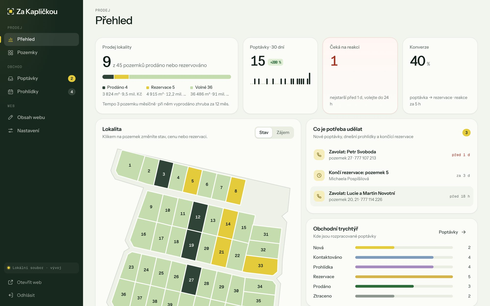
Marketing
Každá poptávka si nese zdroj z reklamy (Facebook, Google, Sklik, Sreality…) i název kampaně. Mapa zájmu ukáže, které pozemky táhnou.
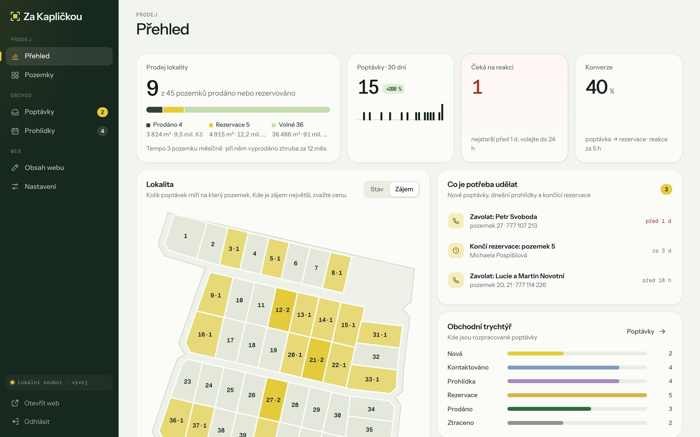
Mapa zájmu: žlutě pozemky s nejvíc poptávkami
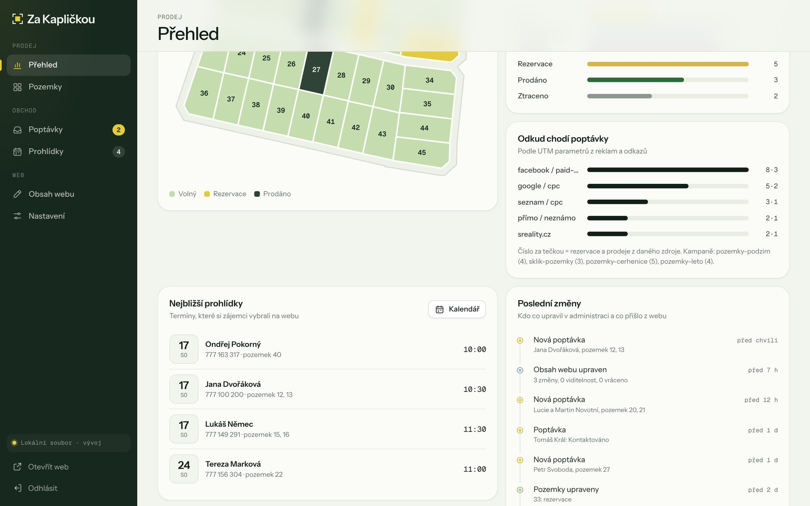
Zdroje poptávek, prohlídky a poslední změny
Pozemky
Tabulka jako v Excelu. Změna se uloží hned a propíše se do 3D modelu na webu, do seznamu, na stránku pozemku i do formuláře.
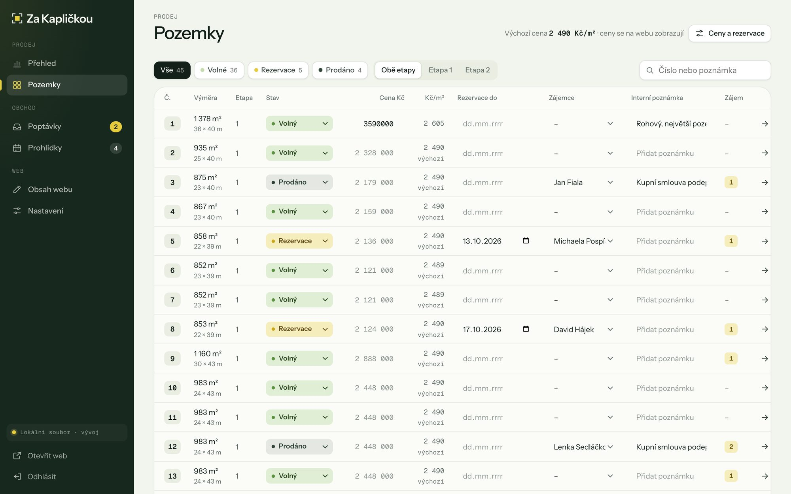
Poptávky
Poptávky z webu přicházejí rovnou sem i s vybraným pozemkem a termínem prohlídky. V detailu je vše pro obchodníka.
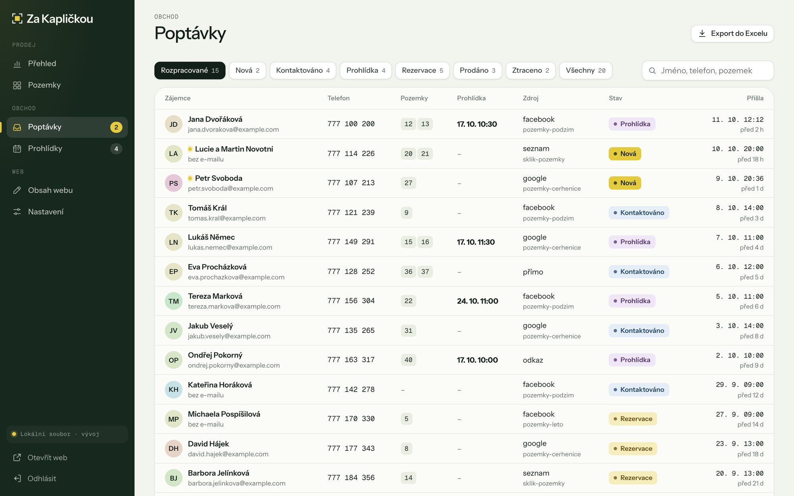
Seznam poptávek s filtry a hledáním
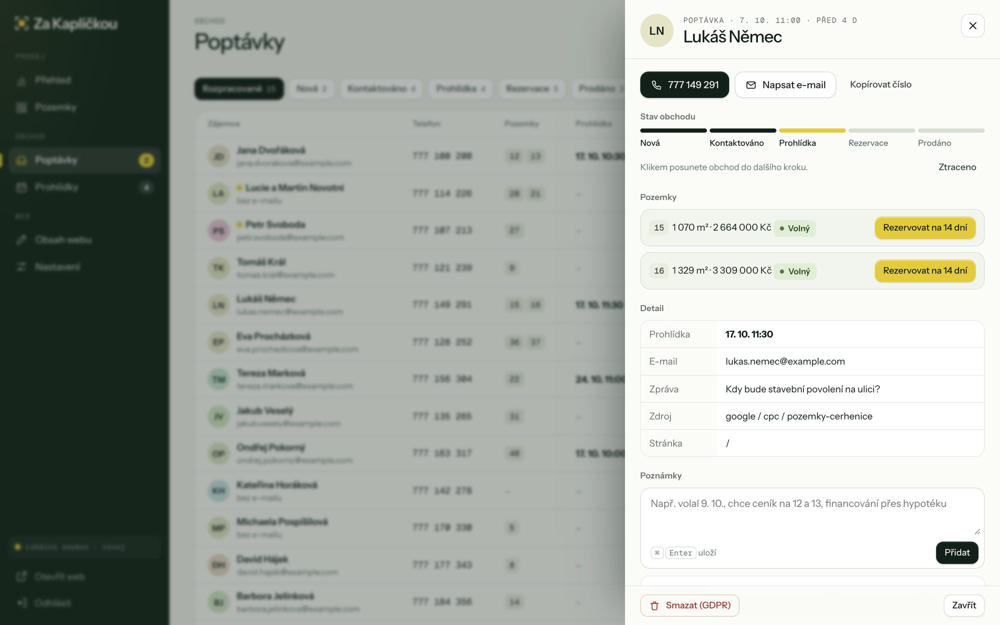
Detail zájemce: stav, pozemky, poznámky
Prohlídky
Obchodník vypíše termíny, třeba každou sobotu 10 až 12 h na několik týdnů dopředu. Volné termíny se hned nabídnou ve formuláři na webu.
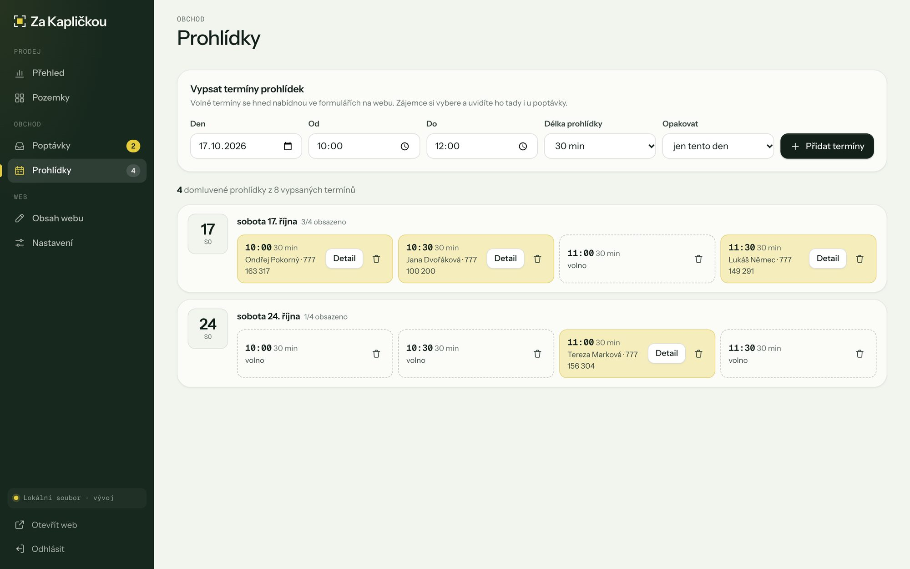
Kalendář prohlídek v administraci
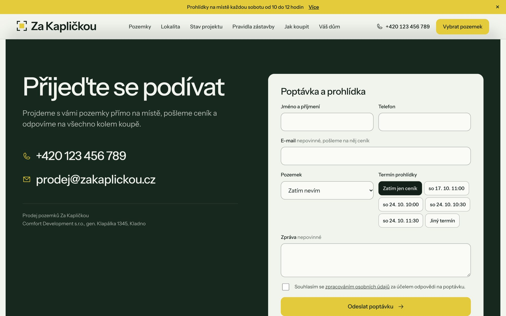
Na webu: výběr termínu přímo ve formuláři
Obsah webu
Web se otevře v režimu úprav. Do textu se klikne a píše, jako ve Wordu. Žádné formuláře ani programátor.
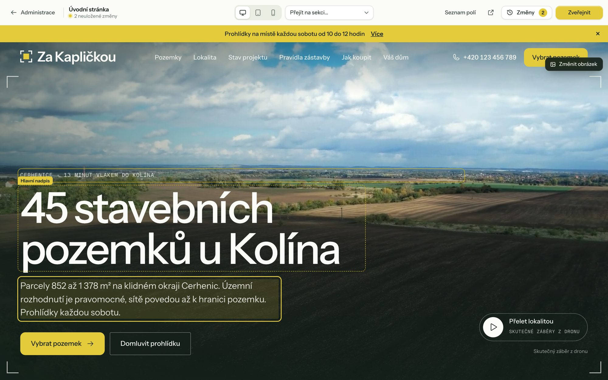
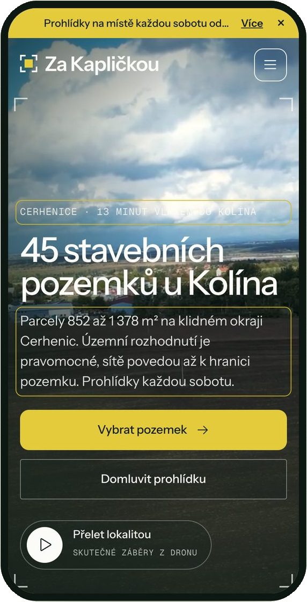
Obsah webu
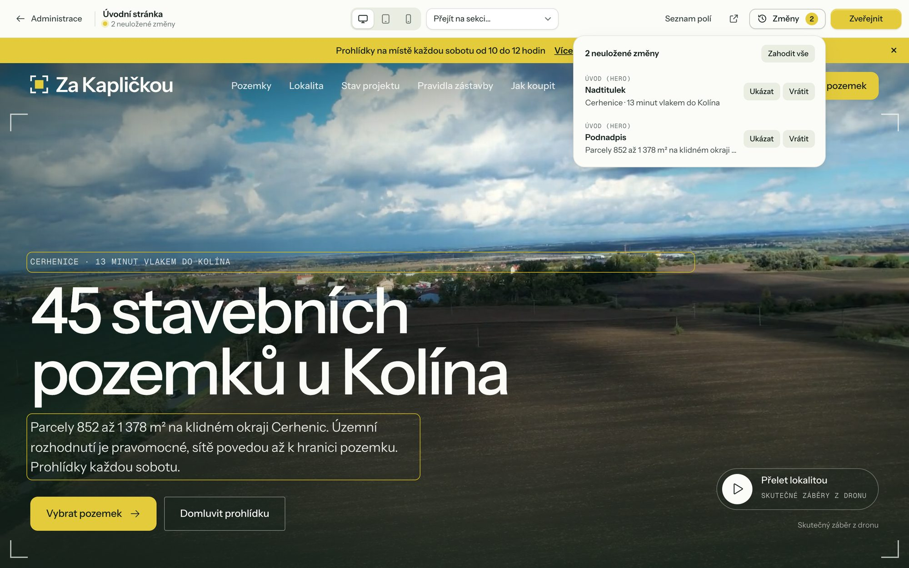
Neuložené změny před zveřejněním
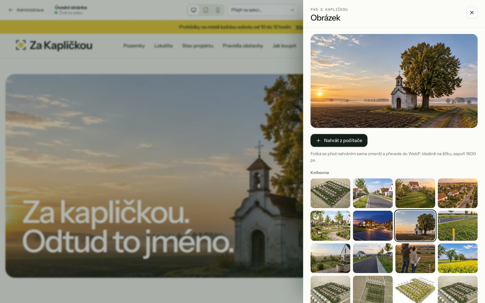
Výměna obrázku z knihovny nebo z počítače
Nastavení
Vše, co se na webu mění občas, je na jednom místě.
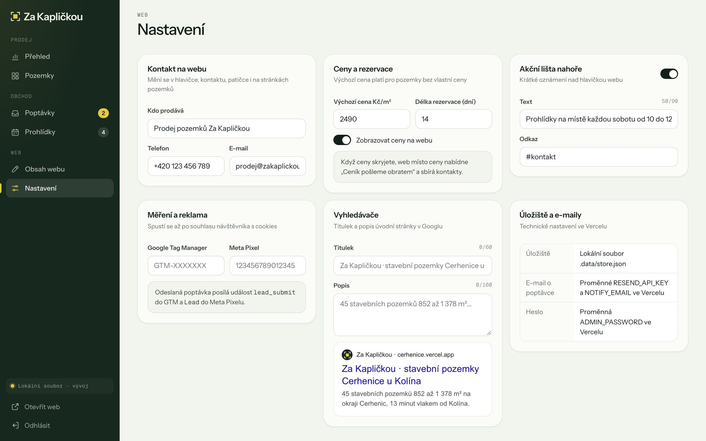
Bezpečnost a provoz
Omezený počet pokusů, automatické odhlášení po 12 hodinách.
Ochrana proti robotům a hromadnému odesílání, souhlas se zpracováním údajů.
Každá nová poptávka může přijít i e-mailem obchodníkovi.